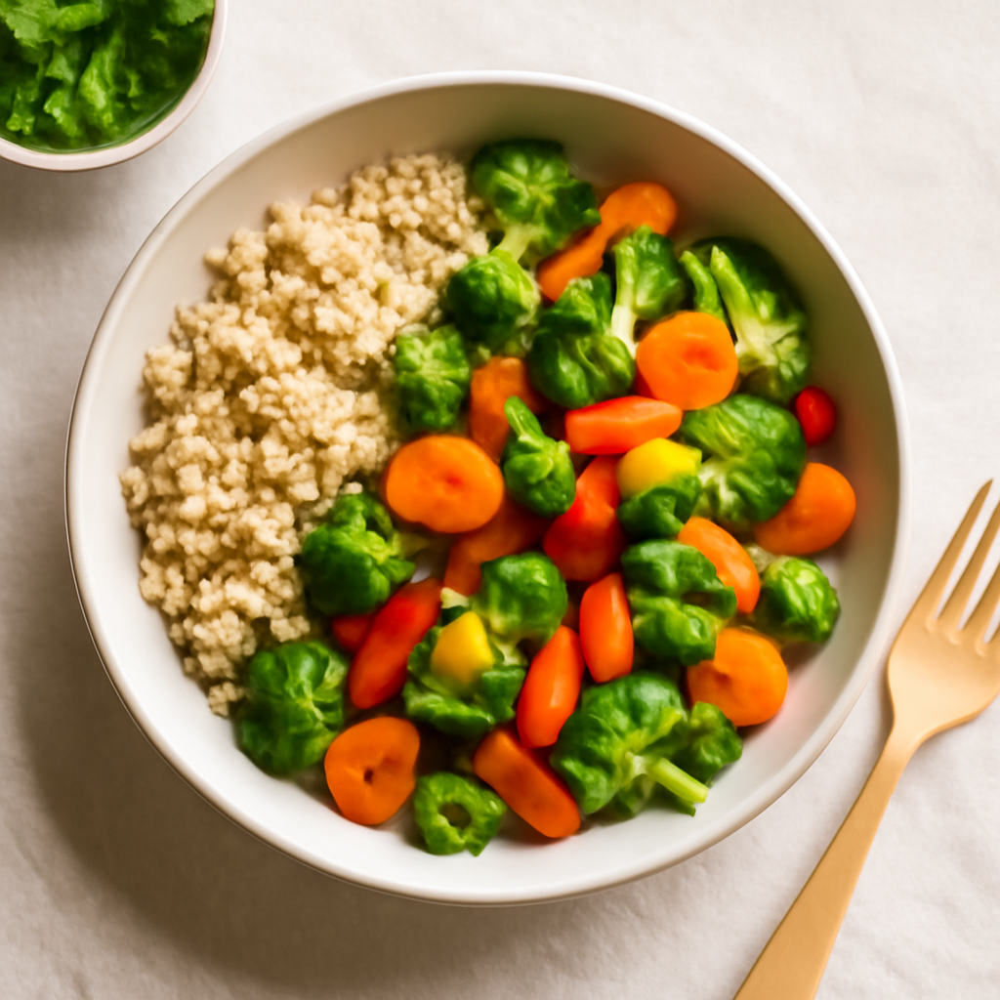

Wednesday — Quinoa and Vegetable Stir-Fry

Cook Time: 30 minutes
Method: Pressure Cooker
quinoastir-fryvegetarian
Ingredients for 6
- 2 cups organic quinoa
- 1 bell pepper (sliced)
- 1 zucchini (sliced)
- 1 cup organic broccoli (florets)
- 1 carrot (sliced)
- 2 tablespoons organic soy sauce or tamari
- 1 tablespoon sesame oil
- 1 tablespoon fresh ginger (grated)
Instructions
- In the pressure cooker, cook quinoa according to instructions (usually 1 part quinoa to 2 parts water).
- In a large bowl, combine sliced veggies with ginger and sesame oil.
- Stir-fry veggies in the pressure cooker for 5-7 minutes until tender, adding soy sauce at the end.
Toddler Notes
- Cut vegetables into small bites for easier consumption.
- Ensure quinoa is fluffy and cool before serving.
← Back to weekly plan